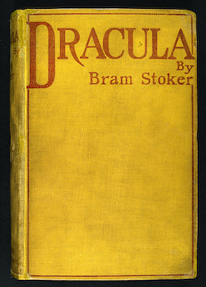
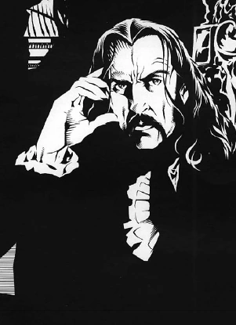

Dracula, by Bram Stoker
Dracula, by Bram Stoker was published in 1897, and it isn't clear, and sometimes even flat out contradicted, that the vampire Dracula was based on Vlad III; supposedly, the novelist simply took the name and "loose information about him", and there were alledgedly no mentions of the voivode in Stoker's notes for the book. Regardless, the two bloodthirsty figures have been associated for over a hundred years, to the point it would be hard to convince the public they are unrelated.
Before Stoker's novel, vampires were seen as peasant superstition, but thanks to Dracula, the legends of the bloodsucking fiends of the night became a topic of popular culture, which in a way turned people more sceptic, abandoning (in part) superstition and myth, as the world proceded to the 20th century.
Dracula in Vampire: The Masquerade
Not the first, but surely my favourite depiction of Dracula as a vampire is in the Table Top Roleplaying Game Vampire: The Masquerade; in this fictional universe, Vlad Dracula was not the first nor the most powerful of vampires, though old and powerful he was, but certainly the most famous one.
This TTRPG tries to follow its lore with history adjacent characters and events, and it would not be different with the most known vampiric figure in the world. Vlad Dracula, since his birth, was the subject of a powerful prophecy, saying he would have unmatched influence over vampires in the future, so the fiends of Transylvania dealt with him with caution. In time, he became their enemy, actively seeking them out and destroying them, until they had enough and set out to kill the Impaler Prince, but instead walked into the voivode's trap. Dracula captured two ancient vampires of the entourage sent to end him, and forced one of them to turn him, then consumed the other. To his sire (how they refer to the vampire who turned another), he freed with the admionition to never challenge him again.
Interestingly enough, the novel entitled "Dracula" was Vlad III's doing. As a means to be left alone by the opposing vampire factions who secretly run the world, Dracula disguise himself as Ármin Vámbéry, manipulated the Irish writer Stoker, telling stories of his life and homeland, and playing on people's superstitions of vampires. The result was the whole world knowning his story, and every man turning into a sceptic at the mere suggestion of Dracula or vampires.
After this incredible event for the vampire world, Dracula went into seclusion. In the centuries since, Vlad Dracula holds a lonely court, and in modern nights has been looking to attain a state in vampirism called "Golconda", where the afflictions commonly associated with vampires will no longer hinder his existence.